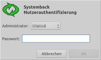
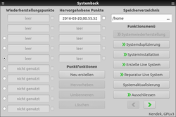
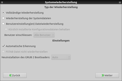
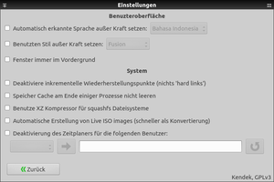
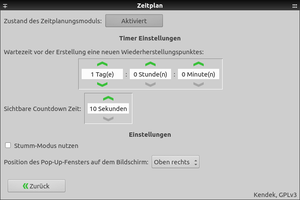

Systemback
Dieser Artikel wurde für die folgenden Ubuntu-Versionen getestet:
Ubuntu 16.04 Xenial Xerus
Ubuntu 14.04 Trusty Tahr
Zum Verständnis dieses Artikels sind folgende Seiten hilfreich:
Systemback  ist ein grafisches Werkzeug, das unter Linux ein Äquivalent zur von Windows bekannten Funktion "Wiederherstellungspunkte" bietet. Darüber hinaus sind Funktionen enthalten, um ein Live-Abbild (ISO-Image; bei Bedarf inkl. der eigenen Daten) zu erstellen. Es kann so auch als Ersatz für Remastersys dienen, das nicht mehr weiterentwickelt wird.
ist ein grafisches Werkzeug, das unter Linux ein Äquivalent zur von Windows bekannten Funktion "Wiederherstellungspunkte" bietet. Darüber hinaus sind Funktionen enthalten, um ein Live-Abbild (ISO-Image; bei Bedarf inkl. der eigenen Daten) zu erstellen. Es kann so auch als Ersatz für Remastersys dienen, das nicht mehr weiterentwickelt wird.
Die Programmoberfläche ist in verschiedene Sprachen übersetzt, seit Mitte 2015 auch auf Deutsch.
Voraussetzungen¶
Damit das Programm wie erwartet arbeitet, ist die Verwendung eines Linux-Dateisystems zwingende Voraussetzung. Interne und externe Datenträger mit Windows-Dateisystemen wie FAT und/oder NTFS sind nicht geeignet.
Installation¶
 Das Programm ist nicht in den offiziellen Paketquellen enthalten. Darüber hinaus basiert es auf Qt 5, was wiederum mindestens Ubuntu 14.04 erfordert.
Das Programm ist nicht in den offiziellen Paketquellen enthalten. Darüber hinaus basiert es auf Qt 5, was wiederum mindestens Ubuntu 14.04 erfordert.
PPA¶
Der Entwickler bietet zur Installation ein "Personal Packages Archiv" (PPA) [1] an.
Adresszeile zum Hinzufügen des PPAs:
ppa:nemh/systemback
Hinweis!
Zusätzliche Fremdquellen können das System gefährden.
Ein PPA unterstützt nicht zwangsläufig alle Ubuntu-Versionen. Weitere Informationen sind der  PPA-Beschreibung des Eigentümers/Teams nemh zu entnehmen.
PPA-Beschreibung des Eigentümers/Teams nemh zu entnehmen.
Damit Pakete aus dem PPA genutzt werden können, müssen die Paketquellen neu eingelesen werden.
Nach dem Aktualisieren der Paketquellen kann folgendes Paket installiert werden [2]:
systemback (ppa)
 mit apturl
mit apturl
Paketliste zum Kopieren:
sudo apt-get install systemback
sudo aptitude install systemback
Manuell¶
Das Programm kann auch selbst heruntergeladen und mittels Shell-Skript installiert werden. Über diesem Weg kann der Quellcode überprüft werden.
Verwendung¶
 Der Programmstart [3] muss mit Root-Rechten [4] erfolgen. Bei Ubuntu-Varianten mit einem Anwendungsmenü ist ein entsprechender Programmstarter unter "System -> Systemback" zu finden. Alternativ können folgende Befehle in einem Terminal [5] benutzt werden:
KDE:
/usr/lib/systemback/sbsustart systemback
Alle anderen Desktop-Umgebungen:
/usr/lib/systemback/sbsustart systemback gtk+
Darüber hinaus darf beim Programmstart keine Paketverwaltung geöffnet sein!
Da die durch das Programm gestarteten Operationen ja nach Hardware und Datenumfang einige Zeit benötigen, enthalten viele Dialoge eine Schaltfläche "! Abbruch !", mit der die jeweilige Aktion abgebrochen werden kann. Prinzipiell kann das System während der Nutzung von Systemback weiter genutzt werden. Allerdings empfiehlt sich dies nicht unbedingt, da bestimmte Operationen wie z.B. das Einschließen des Homeverzeichnis bei der Erstellung einer Live-CD/-DVD nicht funktionieren können, wenn dort gleichzeitig geschrieben oder gelöscht wird.
Funktionsmenü¶
 Zum Verständnis der Arbeitsweise des Programms ist die Kenntnis der Nomenklatur der Funktionen nützlich:
"Speicherverzeichnis" - Standard /home/Systemback. Wird eine externe Festplatte verwendet so darf der Verzeichnisname für den Mountpoint nicht Systemback lauten.
"Systemwiederherstellung" - nur verfügbar, wenn ein Wiederherstellungspunkt ausgewählt ist. Vor einer Wiederherstellung können noch verschiedene Optionen zum Umfang der Rücksicherung gesetzt werden.
"Systemduplizierung" - kopiert das laufende System, einen Wiederherstellungspunkt oder ein Live-Abbild (jeweils mit oder ohne Benutzerdateien). Dann braucht man noch einen Boot-Manager wie GRUB 2 und das kopierte System ist fertig.
"Systeminstallation" - kopiert das laufende System, einen Wiederherstellungspunkt oder ein Live-Abbild (jeweils mit oder ohne Benutzerdateien). Im Anschluss erfolgt eine Abfrage der neuen Benutzerdaten. Ein so installierter Rechner unterscheidet sich im Gegensatz zur Systemduplizierung vom Quellrechner. Auch hier wird noch ein Boot-Manager benötigt.
"Erstelle Live System" - erstellt ein Abbild, das nachträglich in ein ISO-Abbild umgewandelt werden kann.
"'Reparatur Live System" - führt eine Systemwiederherstellung durch. Als Ziel wird allerdings /tmp und nicht / genutzt. Praktisch, wenn ein Rechner nicht mehr startet. Dann bootet man ein Systemback-Live-System und bindet die gewünschten Partitionen ein.
"Systemaktualisierung" - besteht aus folgenden Schritten:
sudo apt-get update sudo apt-get dist-upgrade sudo apt-get autoremove sudo apt-get clean
"Ausschliessen" - Dateien explizit von der Sicherung ausschließen
"Einschliessen" - Dateien implizit in die Sicherung einschließen
"Zeitplan" - ermöglicht die regelmäßige Erstellung von Wiederherstellungspunkten
"Einstellungen" - Konfiguration. Die Standardeinstellungen des Programms sind in der Datei /etc/systemback/systemback.conf hinterlegt.
"Über" - Programmversion und weitere Informationen
Wiederherstellungspunkte¶
Über "Neu erstellen" lässt sich ein neuer Wiederherstellungspunkt (Restore Point) anlegen. Je nach Größe des Root-Dateisystems kann das etwas dauern. Gespeichert wird der Wiederherstellungspunkt als Ordner unterhalb von /home/Systemback/. Als Name des Ordners dient eine Kombination aus Datum und Uhrzeit. Nicht enthalten ist der Inhalt von /home/ – faktisch erfolgt also nur eine 1:1-Sicherung (Kopie) der Systemdateien ohne Benutzerdaten. Ein Wiederherstellungspunkt kann ohne Probleme mit einem Dateimanager eingesehen werden. Eine Komprimierung oder ähnliches findet nicht statt.
Solange der Plattenplatz reicht, können beliebig viele Wiederherstellungspunkte angelegt werden. Mit "Highlight" können diese auf Wunsch in eine zweite Liste "Highlighted Restore Points" aufgenommen, mit "Rename" umbenannt oder mit "Delete" wieder gelöscht werden.
Systemwiederherstellung¶
 Nach Auswahl eines vorhandenen Wiederherstellungspunkts wird die Schaltfläche "Systemwiederherstellung" aktiv. Die gesicherten Dateien ersetzen dann die jeweils vorhandenen. Theoretisch müssten dabei nach dem Erstellen eines Wiederherstellungspunkt hinzugekommene Dateien erhalten bleiben, solange keine Datei gleichen Namens im Wiederherstellungspunkt enthalten ist. Empfehlenswert nach einer Systemwiederherstellung ist ein Neustart des Rechners, damit Änderungen an der Systemkonfiguration übernommen werden.
Live-System erstellen¶
Über "Erstelle Live System" wird in zwei Schritten eine bootfähige Abbild-Datei erzeugt. Gespeichert werden die dazugehörigen Dateien in der Voreinstellung unter /home/:
.sblive - programminternes Dateiformat (technisch gesehen eine tar-Datei)
.iso - über die Schaltfläche "Convert to ISO" umgewandelte .sblive-Dateien
Interessant ist die Option "Nutzerdateien einschließen", mit der Benutzerdaten eingeschlossen werden können. Allerdings darf die Größe 4,4 GiB insgesamt nicht übersteigen, wenn man ein ISO-Abbild erzeugen möchte, das man später auf eine DVD übertragen möchte. Eine .sblive- oder .iso-Datei kann anschließend mit "Ziel schreiben" exportiert werden. Falls man ein Brennprogramm verwendet: keine Daten-CD/-DVD erstellen, sondern die Abbild-Datei (.iso) direkt brennen!
Alternativ können ISO-Dateien auch nachträglich auf einen USB-Stick transferiert werden (siehe Live-USB).
|  |
| Einstellungen |
|  |
| Zeitplaner |
Problembehebung¶
Im Falle einer defekten grafischen Oberfläche kann man einen Wiederherstellungspunkt auch mit der Kommandozeile zurückspielen. Der Befehl zum Programmstart lautet [5]:
sudo systemback-cli
Dann wählt man einen vorhandenen Wiederherstellungspunkt aus oder erstellt einen neuen:
Systemback grundlegendes Wiederherstellungsbenutzerinterface
Verfügbare(r) Wiederherstellungspunkt(e):
B ─ 2016-03-20,00.55.52
G ─ Neu erstellen
Q ─ Beenden
Kendek, GPLv3Links¶
Questions and Answers
 - häufige Fragen und Antworten
- häufige Fragen und Antworten
Backup (System Restore Point) your Ubuntu/Linux Mint with SystemBack
- Blogbeitrag, 11/2015Create a live system ISO for your Ubuntu-based Linux machines using Systemback
- Blogbeitrag, 12/2014Systemback - Simple way to Backup/Restore your Linux System
- Blogbeitrag, 10/2014Wiederherstellungspunkte unter Linux mit Systemback
- Blogbeitrag, 09/2014Systemback: Restore Your Linux System To Previous State
- Blogbeitrag, 07/2014TimeShift
- nutzt rsyncDatensicherung
 Übersichtsartikel
Übersichtsartikel
- Erstellt mit Inyoka
-
 2004 – 2017 ubuntuusers.de • Einige Rechte vorbehalten
2004 – 2017 ubuntuusers.de • Einige Rechte vorbehalten
Lizenz • Kontakt • Datenschutz • Impressum • Serverstatus -
Serverhousing gespendet von